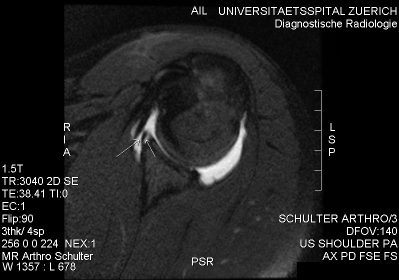

Ficha del catálogo
Lesión del labrum glenoideo tras luxación de hombro
- Sistema
- Óseo
- Modalidad
- RM
- Región
- Hombro
- Dificultad
- Avanzado
Tras un episodio de luxación anterior de hombro el labrum anteroinferior se desprende del reborde glenoideo y esa lesión, conocida como lesión de Bankart, es la causa principal de inestabilidad recidivante. Puede acompañarse de arrancamiento óseo del reborde y de una impactación en la cara posterolateral de la cabeza humeral. La resonancia, y sobre todo la artrorresonancia, permiten valorar el labrum, los ligamentos glenohumerales y la pérdida ósea. El estudio previo a la cirugía debe cuantificar el defecto óseo porque de él depende la técnica elegida.
Técnica
Resonancia de hombro con secuencias de alta resolución en los tres planos, preferentemente tras inyección intraarticular de contraste diluido, que distiende la cápsula y separa las estructuras.
Qué observar
- Solución de continuidad del labrum anteroinferior con desplazamiento del fragmento
- Contraste que se introduce entre el labrum y el reborde glenoideo
- Fragmento óseo desprendido del reborde anteroinferior en la variante ósea
- Depresión de la cara posterolateral de la cabeza humeral por impactación
- Estado del ligamento glenohumeral inferior y de la cápsula anterior
- Grado de pérdida ósea glenoidea medido en la imagen de cara articular
Hallazgos
Desinserción del labrum anteroinferior con o sin fragmento óseo, acompañada de la escotadura de impactación humeral posterolateral y de distensión capsular anterior.
Perlas
La lesión ósea de la cabeza humeral, conocida como lesión de Hill y Sachs, se busca en los cortes axiales situados por encima del nivel de la apófisis coracoides, porque más abajo la cara posterolateral es normalmente plana. La combinación de defecto glenoideo y defecto humeral que se enganchan entre sí condiciona la técnica quirúrgica.
Diagnóstico diferencial
- Variante anatómica del labrum anterosuperior
- Se sitúa en el cuadrante anterosuperior, con bordes lisos y sin edema.
- Lesión del labrum superior
- Afecta a la inserción del tendón del bíceps en el polo superior.
- Rotura del manguito rotador
- El defecto está en el tendón y no en el reborde glenoideo.
Simuladores
- Receso sublabral normal
- Artefacto de ángulo mágico en el labrum
- Cartílago articular hialino confundido con desinserción
Por modalidad
- RM
- Método de elección para el labrum y los ligamentos, mejor con contraste intraarticular
- TC
- Cuantifica con precisión la pérdida ósea glenoidea
- RX
- Con proyecciones especiales puede mostrar el defecto óseo y la impactación humeral
Protocolo
Artrorresonancia de hombro con secuencias en los tres planos y, si el equipo lo permite, adquisición en abducción y rotación externa, que tensa el ligamento y desenmascara desinserciones sutiles.
Clasificación
Se describen variantes según el labrum esté desprendido, desplazado en bloque con el periostio o cicatrizado en posición anómala, además de la forma con fragmento óseo.
Errores frecuentes
- Interpretar variantes normales del labrum anterosuperior como roturas
- No cuantificar la pérdida ósea glenoidea en el informe prequirúrgico
- Buscar la impactación humeral en cortes demasiado bajos

hombro labrum bankart hill y sachs inestabilidad artrorresonancia luxacion recidivante